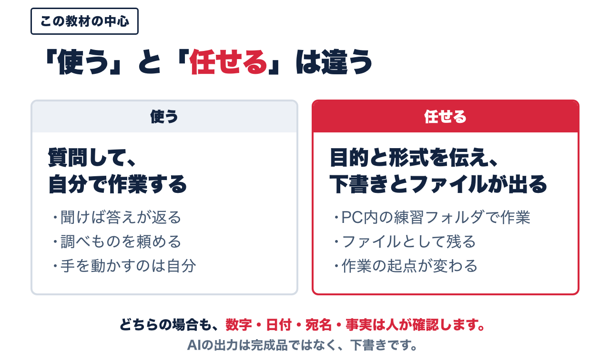
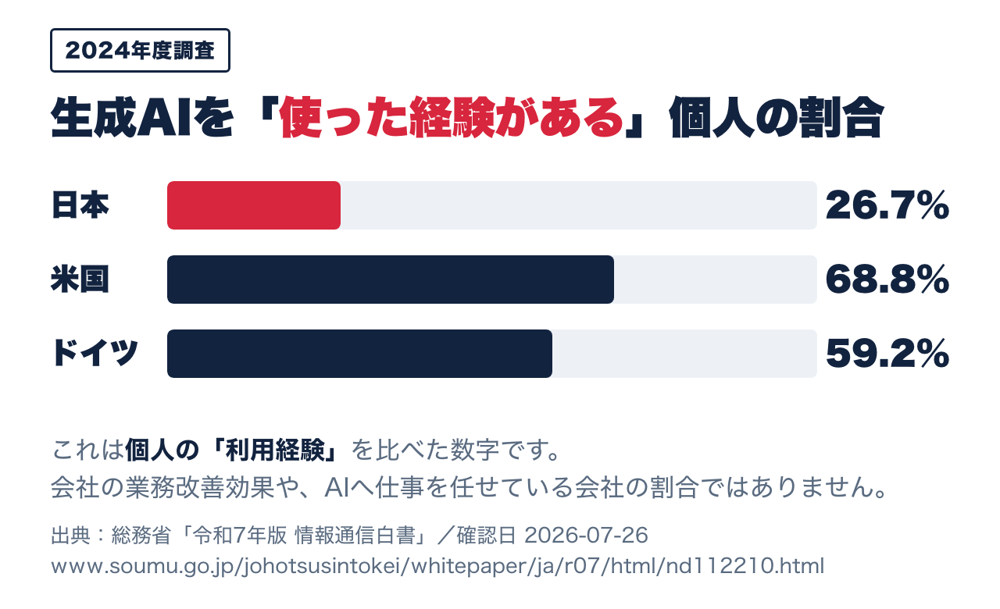
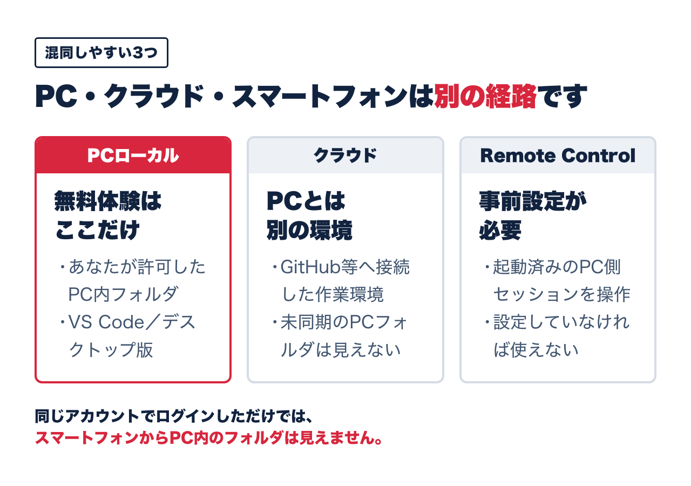

「あの人しかできない」を手放す最初の一歩は、道具を増やすことではありません。手順を、渡せる形にすることです。
「売上を増やしたい」。当然の目標です。ただ、その前に詰まっているものがあります。
この循環の入口は、いつも時間です。順番はこうなります。
逆から入ると続きません。新しい道具を先に増やしても、それを覚える時間がないからです。減らすのが先、増やすのが後です。
生成AIを「もう使っている」という方は多いと思います。ただ、そのほとんどは「使う」で止まっています。

この差は、AIの賢さの差ではありません。渡し方の差です。
ここがいちばん大事なところです。
「見積を作っておいて」と頼んで、まともなものが返ってこないのは、AIの能力が足りないからではありません。その見積を作る手順が、誰の頭の中にもない形で存在しているからです。
社長の頭の中にはあります。10年やっているから、考えなくても手が動きます。でも、それは書き出されていません。だから人にも渡せないし、AIにも渡せない。
「この仕事は、あの人しかできない」という状態は、能力の問題ではなく手順が言葉になっていないことの結果です。AIに任せられない業務は、たいてい新しい社員にも任せられません。
逆に言えば、AIに渡せる形にすることは、人に渡せる形にすることと同じ作業です。片方をやれば、もう片方も終わります。
総務省「令和7年版 情報通信白書」によると、2024年度調査で生成AIを利用した経験のある個人は、日本で26.7%、米国で68.8%、ドイツで59.2%でした。

これは個人の「利用経験」を比べた数字です。会社の業務改善効果や、AIへ仕事を任せている会社の割合ではありません。
それでも読み取れることがあります。日本ではまだ「試したことがある」段階で止まっている人が多いということです。つまり、「任せる」まで進んでいる会社は、数字よりさらに少ないはずです。
ここは、まだ空いています。
全部やろうとすると続きません。今日の到達点は1つだけにします。
これだけです。スマートフォンからPCを操作する設定も、外部サービスとの連携も、自動化も、今日はやりません。

練習で扱うのは架空のデータだけです。顧客名、実際の金額、契約内容、社内機密は入れないでください。会社のPCで行う場合は、先に情報システム部門の許可を取ってください。
必要なものは3つだけです。インターネットにつながるPC、メールアドレス、40分の空き時間。
7/1 タクシー 1,200円 7/3 サンプル文具 880円 7/10 会議用の飲み物 500円×4 7/15 コピー用紙 398円
このメモを貼り付けて、こう頼みます。
この架空メモを、日付・項目・金額の表に整理し、 「経費メモ.md」というファイルへ保存してください。 合計を計算し、計算根拠も書いてください。
数十秒で、フォルダの中にファイルができます。ここからが本番です。
500円×4が2,000円になっているか。合計が4,478円になっているか。自分の目で確認してください。
AIの出力は下書きです。数字・日付・宛名・事実は、最後に必ず人が見ます。この一手間を省いた瞬間に、AI活用は事故になります。
「計算根拠も書いて」と頼んでいるのは、確認を速くするためです。根拠が書いてあれば、どこを見ればいいかがすぐ分かります。
ここまでできた方は、次の壁にぶつかります。全員がぶつかります。
これらはすべて同じ原因から来ています。その場の思いつきで頼んでいて、手順が形になっていないことです。
ここを越えるには、会社の説明書を1枚作り、業務の型を1つ決め、保存と復元のやり方を整える——という順番の作業が必要になります。道具の話ではなく、段取りの話です。
手順が形になると、渡せる相手が増えます。
LEVEREXがやっているのは、この「手順を書き出して、渡せる形に組み替える」作業を、会社と一緒に30日で進めることです。AIはそのための道具の1つにすぎません。まず手順、次に道具。順番が逆になると続きません。
無料・10問・約2分。ご担当者が1週間ご不在になった場合に、どの業務が止まるかがその場でわかります。
業務の属人化診断を受ける無料・10問・約2分 「回る会社チェックリスト10」で現状を確認する まんがで進め方をご覧いただく